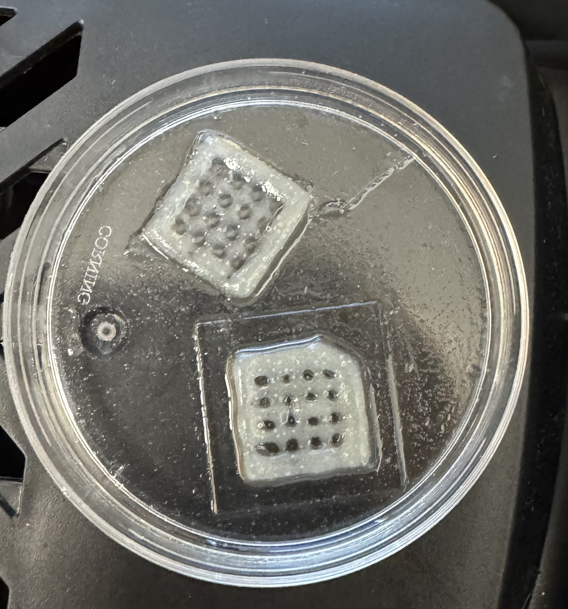

Bioprinting Lab Work
Microscale Tissue Engineering and Biotechnology Laboratory · Halifax, NS
March 2026 — Present
In the Microscale Tissue Engineering and Biotechnology Laboratory, I am grateful to work under Post Doctorate, Dr. Negin Khoshnood, to help potentially volumetric bioprint bioink. I have converted stl files into a spinning video through Blender for volumetric bioprinting purposes. I have also made easy-to-follow guide on the 3D printers and helped improve the documentation and maintenance process for the equipment.
Bioprinting & 3D Modelling
A look at the bioprinted structures and the 3D model used to visualize the design.

Bioprinted Structure
Ex. 3D Model Rotation (X-Y Plane) for Volumetric BioPrinting
Skills Developed
- Laboratory equipment maintenance
- Technical documentation
- 3D printing
- Bioprinting workflows
- Following laboratory safety procedures
- Communicating technical procedures clearly
Why It Connects to My Interests
This experience gave me hands-on exposure to bioprinting and reinforced my interest in the intersection between engineering, materials and biomedical applications.